Ты ориентируешься в лесу
0%
Опасный уровень
Тебе пока сложно ориентироваться
и принимать безопасные решения в лесу
Правильные ответы

1. Где в лесу чаще можно заметить грибы?
Во влажных тенистых местах
В разных участках леса условия среды отличаются по влажности, освещению и состоянию поверхности
2. Что может повлиять на появление грибов после дождя?
Влажность почвы
После дождя разные участки леса удерживают влагу по-разному,
и это меняет состояние среды вокруг
3. Ты увидел несколько похожих грибов рядом. Что важно?
У разных видов могут быть одни признаки
Похожие форма, цвет или поверхность могут встречаться
у разных грибов и лесных объектов
4. Что лучше сделать с незнакомым грибом во время прогулки?
Оставить на месте
Во время прогулки незнакомые находки часто становятся частью наблюдения за окружающей средой
5. Что помогает внимательнее наблюдать за грибной средой?
Замечать почву, мох и влажные участки
Наблюдение за разными деталями лесной среды помогает лучше замечать изменения вокруг